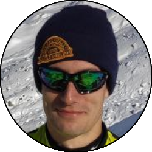
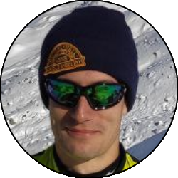

Relazione
| Data Uscita | 08-04-2023, Sabato | Area | Cevedale |
|---|---|---|---|
| Luogo di Partenza | Rifugio Albergo Forni - Santa Caterina Valfurva (SO) | Quota |
2150m la partenza 2700m il rifugio Pizzini 3769m la cima |
| Dislivello | 1619m | Tempo di salita | 04:30 ore |
| Esposizione | Sud, Ovest, Nord-Ovest | Difficoltà Tecnica | 2.3/E2 |
| Punti di Appoggio | Rifugio Pizzini | Pendii Pericolosi | Il primo tratto del sentiero estivo e la parte alta della vedretta di Cedec |
| Partecipanti |  Daniele,  Fabio, Daniele,  Fabio,  Luca R, Luca R,  Oracolo, Oracolo,  Papa, Papa,  Ste Ste |
||
(clicca sull'immagine per scarica la traccia GPS)
Accesso
Da Lecco percorrere la strada della Valtellina fino a Bormio. Arrivati a Bormio seguire le indicazioni per il passo Gavia fino ad arrivare all'inizio dell'abitato di Santa Caterina. Sulla sinistra prendere una deviazione (indicazioni) per la località Forni (colonnina per pagare il parcheggio all'inizio della valle, 5€). Seguire ora la strada fino ad arrivare al Rifugio Forni, e parcheggiare nel grande parcheggio sulla destra appena sotto al rifugio.
Salita
Ci sono due possibilità per raggiungere il rifugio Pizzini: la prima è quella semplicemente di seguire il sentiero estivo che è una strada carrareccia che dopo qualche tornante iniziale si inoltra senza pendenze particolari nella placida val Cedec. In alternativa, soprattutto se il manto nevoso fosse instabile, è possibile seguire il sentiero invernale: seguire le indicazioni per il rifugio Branca fino a poco dopo un ponticello, dove si prende una deviazione a sinistra e si segue la strada che con qualche tornante sale in val Cedec, ricongiungendosi all'opzione estiva.
Dal rifugio seguire le indicazioni per il rifugio Casati, inoltrandosi nella larga conca fino a giungere alla stazione a valle della teleferica del rifugio stesso. Da qui tenere decisamente la destra, inoltrandosi nel largo vallone che sale direttamente verso la cima del Cevedale, ovvero la vedretta di Cedec. Salire la vedretta inizialmente senza percorso obbligato, poi tenendo tendenzialmente la sinistra per evitare le zone crepacciate, fino alla parte finale in cui si tiene un po' più la destra puntando al pianone glaciale da cui giunge l'itinerario dal rifugio Casati.

Noi abbiamo interrotto qua la salita, poichè il meteo era brutto da tutto il giorno e le condizioni di visibilità erano pessime, il che ci avrebbe potuto far perdere il punto di discesa al ritorno, oltre al fatto che non sapevamo se stessimo attraversando zone crepacciate o meno. Se si proseguisse verso la cima è necessario superare la crepaccia terminale e percorrere la facile crestina che porta senza problemi in cima.
Discesa
Per la via di salita, facendo attenzione alle zone più crepacciate, e con la possibilità di qualche variante più ripida nella parte bassa stando sulla destra. Giunti in val Cedec è anche possibile bypassare il rifugio Pizzini collegandosi direttamente alla strada di discesa poco più in basso, se si volesse risparmiare tempo.